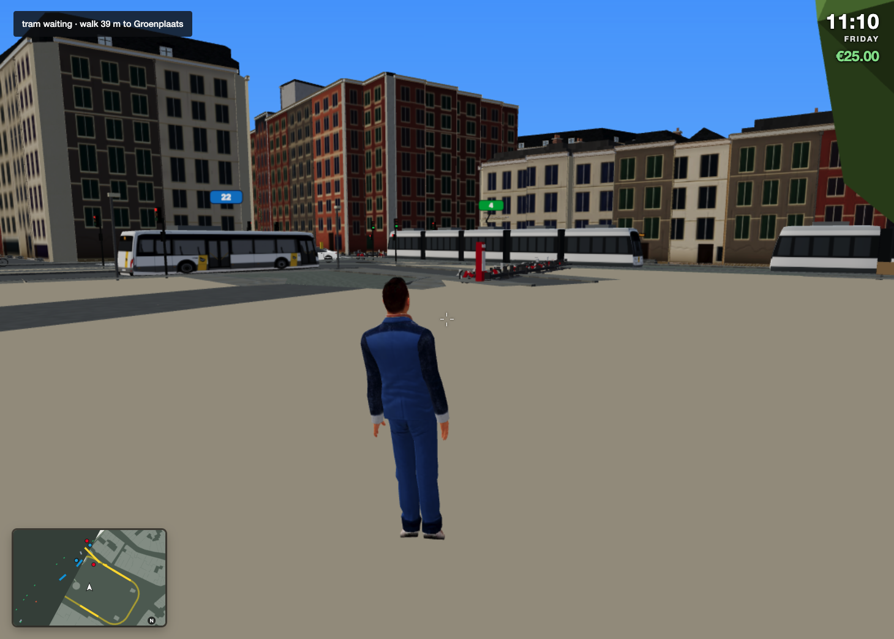

_Chor.jpg)
.jpeg)
.jpeg)
Onze-Lieve-Vrouwekathedraal
custom: olv_cathedral · mesh: manifest_custom
OSM way 26495164 · Wikidata Q5901
Gothic from Groenplaats — not a classical temple colonnade.
Special buildings · façades · shops — generated by district review
· picture references: districts/2000-antwerpen/references/index.html
(259 photos)
plaza-trees-paul-smekensplein — Match plaza trees to aerial — Paul Smekenspleinplaza-trees-sint-andriesplaats — Match plaza trees to aerial — Sint-Andriesplaatsplaza-trees-graanmarkt — Match plaza trees to aerial — Graanmarktplaza-trees-operaplein — Match plaza trees to aerial — Operapleinplaza-trees-falconplein — Match plaza trees to aerial — Falconpleinplaza-trees-theodoor-van-rijswijckplaats — Match plaza trees to aerial — Theodoor Van Rijswijckplaatsplaza-trees-johan-westerlundplein — Match plaza trees to aerial — Johan Westerlundpleinplaza-trees-mechelseplein — Match plaza trees to aerial — Mechelsepleinplaza-trees-vrijdagmarkt — Match plaza trees to aerial — Vrijdagmarktplaza-trees-veemarkt — Match plaza trees to aerial — Veemarktplaza-trees-leonie-glassplein — Match plaza trees to aerial — Leonie Glasspleinplaza-trees-bullinckplaats — Match plaza trees to aerial — Bullinckplaatsplaza-trees-hessenplein — Match plaza trees to aerial — Hessenpleinplaza-trees-sint-paulusplaats — Match plaza trees to aerial — Sint-Paulusplaatsplaza-trees-leopoldplaats — Match plaza trees to aerial — Leopoldplaatsplaza-trees-ruckersplaats — Match plaza trees to aerial — Ruckersplaatsplaza-trees-komedieplaats — Match plaza trees to aerial — Komedieplaatsplaza-trees-lijnwaadmarkt — Match plaza trees to aerial — Lijnwaadmarktplaza-trees-ossenmarkt — Match plaza trees to aerial — Ossenmarktcathedral-gothic — Rework OLV cathedral Gothic massinghet-steen-silhouette — Polish Het Steen gatehouse from the Scheldtgrote-markt-setpiece — Grote Markt set-piece: Stadhuis + Brabo + guild terracecentre-shopfront-facades — Centre shopfront / horeca façade batchproof-screenshots — Capture proof screenshots (spawn, Grote Markt, Steen)minimap-district-scoped — Verify minimap is district-scoped (no Harmonie kiosk)ref-onze-lieve-vrouw-geboorte — Match Onze-Lieve-Vrouw Geboorte to its reference photosref-onze-lieve-vrouwekathedraal — Match Onze-Lieve-Vrouwekathedraal to its reference photosref-brabo-fountain — Match Brabo fountain to its reference photosref-sint-augustinuskerk — Match Sint-Augustinuskerk to its reference photosref-stadhuis-antwerpen — Match Stadhuis Antwerpen to its reference photosref-sint-carolus-borromeuskerk — Match Sint-Carolus Borromeuskerk to its reference photosref-sint-andrieskerk — Match Sint-Andrieskerk to its reference photosref-vleeshuis — Match Vleeshuis to its reference photosref-steenplein-2020 — Match Steenplein 2020 to its reference photosref-steenplein — Match Steenplein to its reference photosref-delbekehuis — Match Delbekehuis to its reference photosref-sint-annakapel — Match Sint-Annakapel to its reference photosref-het-steen — Match Het Steen to its reference photosref-steenbergstraat — Match Steenbergstraat to its reference photosref-sint-pauluskerk — Match Sint-Pauluskerk to its reference photosref-sint-annatunnel — Match Sint-Annatunnel to its reference photosref-sint-jacobskerk — Match Sint-Jacobskerk to its reference photosref-sint-joriskerk — Match Sint-Joriskerk to its reference photosref-protestants-evangelische-kerk — Match Protestants Evangelische kerk to its reference photosref-onze-lieve-vrouw-van-gratiekerk — Match Onze-Lieve-Vrouw van Gratiekerk to its reference photosref-toegangsgebouw-sint-annatunnel — Match Toegangsgebouw Sint-Annatunnel to its reference photosref-sint-walburgiskerk — Match Sint-Walburgiskerk to its reference photosref-sint-antoniuskerk — Match Sint-Antoniuskerk to its reference photosref-museum-aan-de-stroom — Match Museum aan de Stroom to its reference photosref-gerechtshof — Match Gerechtshof to its reference photosref-m-hka-museum-van-hedendaagse-kunst-antwerpen — Match M HKA - Museum van Hedendaagse Kunst Antwerpen to its reference photosref-osm-494993846 — Match osm-494993846 to its reference photosref-willemdok — Match Willemdok to its reference photosref-kattendijkdok — Match Kattendijkdok to its reference photosref-shopfronts — Shopfronts that look like the real placescustom: olv_cathedral · mesh: manifest_custom
OSM way 26495164 · Wikidata Q5901
Gothic from Groenplaats — not a classical temple colonnade.


.jpg)
.jpg)
.jpg)
custom: stadhuis · mesh: manifest_custom
OSM way 22966134 · Wikidata Q2005868
Renaissance city hall on Grote Markt west side.



.jpg)
custom: het_steen · mesh: manifest_custom
OSM way 29067925 · Wikidata Q1014126
Medieval gatehouse on the Scheldt — silhouette from the quay.


custom: brabo_fountain · mesh: manifest_custom
OSM node 900000001 · Wikidata Q3911365
Brabo on Grote Markt; synthetic node (not in OSM extract as memorial).
custom: grote_markt_terrace · mesh: manifest_custom
OSM way 496929324 · Wikidata —
Representative guild-house terrace facing Grote Markt.


_2.jpg)
_1.jpg)
_mit_Onze-Lieve-Vrouwecollege.jpg)
custom: — · mesh: not_applicable
OSM way 232921429 · Wikidata Q28530528


custom: — · mesh: not_applicable
OSM way 497461472 · Wikidata Q107388201
custom: — · mesh: not_applicable
OSM relation 12470557 · Wikidata Q88535463
custom: — · mesh: not_applicable
OSM way 232933575 · Wikidata —


custom: — · mesh: not_applicable
OSM node 2409413865 · Wikidata —
custom: — · mesh: not_applicable
OSM node 2412353657 · Wikidata —
custom: — · mesh: not_applicable
OSM node 2412353656 · Wikidata —


.jpg)
.jpg)
.jpg)
custom: — · mesh: not_applicable
OSM way 39886923 · Wikidata Q1415440
custom: — · mesh: not_applicable
OSM relation 3127795 · Wikidata Q48203316


.jpg)
.jpg)
.jpg)
custom: — · mesh: not_applicable
OSM way 233040913 · Wikidata Q2686991


custom: — · mesh: not_applicable
OSM way 116481762 · Wikidata Q16069295

,_Antwerp,_Belgium,_aerial_view.jpg)


custom: — · mesh: not_applicable
OSM way 40092556 · Wikidata Q1083704


custom: — · mesh: not_applicable
OSM way 232914449 · Wikidata Q2802159


_Chor_2.jpg)
_Chorgest%C3%BChl_1.jpg)
_Hochaltar.jpg)
custom: — · mesh: not_applicable
OSM way 116149697 · Wikidata Q2272511


.jpg)
custom: — · mesh: not_applicable
OSM way 232926614 · Wikidata Q2278872


custom: — · mesh: not_applicable
OSM way 496126617 · Wikidata Q107382995

.jpg)
.jpg)
custom: — · mesh: not_applicable
OSM way 662325582 · Wikidata —


custom: — · mesh: not_applicable
OSM way 232933576 · Wikidata Q2183335
custom: — · mesh: not_applicable
OSM way 8414722 · Wikidata —
custom: — · mesh: not_applicable
OSM way 18905696 · Wikidata —


custom: — · mesh: not_applicable
OSM way 26407876 · Wikidata —
custom: — · mesh: not_applicable
OSM node 2396084430 · Wikidata Q56550290

custom: — · mesh: not_applicable
OSM way 445101734 · Wikidata —

.jpg)

.jpeg)
.jpeg)
custom: — · mesh: not_applicable
OSM way 147447606 · Wikidata Q691988
custom: — · mesh: not_applicable
OSM way 232921430 · Wikidata —


custom: — · mesh: not_applicable
OSM way 319261272 · Wikidata Q1809382


custom: — · mesh: not_applicable
OSM node 11150730054 · Wikidata —

.jpg)


custom: — · mesh: not_applicable
OSM way 192642420 · Wikidata Q33100193


custom: — · mesh: not_applicable
OSM way 47359481 · Wikidata Q1573755
custom: — · mesh: not_applicable
OSM relation 3127633 · Wikidata Q65512565
custom: — · mesh: not_applicable
OSM relation 902468 · Wikidata Q775797
custom: — · mesh: not_applicable
OSM way 785514951 · Wikidata —

.jpg)

custom: — · mesh: not_applicable
OSM way 233040911 · Wikidata Q83213604


custom: — · mesh: not_applicable
OSM way 496126599 · Wikidata Q33100296


custom: — · mesh: not_applicable
OSM way 232768394 · Wikidata Q23580548
custom: — · mesh: not_applicable
OSM relation 3428464 · Wikidata Q595802


.jpg)
.jpg)
custom: — · mesh: not_applicable
OSM way 60582816 · Wikidata —
| id | storeys | style | file |
|---|---|---|---|
facade_01 | 4 | baroque_civic | facade_01.jpg |
facade_02 | 3 | stepped_gable | facade_02.jpg |
facade_03 | 4 | shopfront_meir | facade_03.jpg |
facade_04 | 5 | brick_sandstone_band | facade_04.jpg |
facade_05 | 3 | shopfront_meir | facade_05.jpg |
facade_06 | 4 | neo_flemish | facade_06.jpg |
facade_07 | 4 | shopfront_meir | facade_07.jpg |
facade_08 | 3 | art_deco | facade_08.jpg |
facade_09 | 5 | warehouse_quay | facade_09.jpg |
facade_10 | 4 | shopfront_meir | facade_10.jpg |
facade_11 | 3 | warehouse_quay | facade_11.jpg |
facade_12 | 4 | stepped_gable | facade_12.jpg |
facade_13 | 3 | shopfront_meir | facade_13.jpg |
facade_14 | 4 | brick_sandstone_band | facade_14.jpg |
facade_15 | 5 | shopfront_meir | facade_15.jpg |
facade_16 | 4 | neo_flemish | facade_16.jpg |
facade_17 | 3 | shopfront_meir | facade_17.jpg |
facade_18 | 4 | art_deco | facade_18.jpg |
facade_19 | 3 | warehouse_quay | facade_19.jpg |
facade_20 | 4 | shopfront_meir | facade_20.jpg |
facade_21 | 5 | baroque_civic | facade_21.jpg |
facade_22 | 4 | warehouse_quay | facade_22.jpg |
facade_23 | 3 | shopfront_meir | facade_23.jpg |
facade_24 | 4 | brick_sandstone_band | facade_24.jpg |
facade_25 | 4 | shopfront_meir | facade_25.jpg |
facade_26 | 3 | neo_flemish | facade_26.jpg |
facade_27 | 5 | art_nouveau | facade_27.jpg |
facade_28 | 3 | art_deco | facade_28.jpg |
facade_29 | 4 | warehouse_quay | facade_29.jpg |
facade_30 | 4 | shopfront_meir | facade_30.jpg |
facade_31 | 3 | shopfront_meir | facade_31.jpg |
facade_32 | 4 | stepped_gable | facade_32.jpg |
facade_33 | 3 | warehouse_quay | facade_33.jpg |
facade_34 | 5 | brick_sandstone_band | facade_34.jpg |
facade_35 | 4 | narrow_plot | facade_35.jpg |
facade_36 | 3 | neo_flemish | facade_36.jpg |
facade_37 | 4 | art_nouveau | facade_37.jpg |
facade_38 | 3 | art_deco | facade_38.jpg |
facade_39 | 5 | warehouse_quay | facade_39.jpg |
facade_40 | 4 | shopfront_meir | facade_40.jpg |
facade_41 | 3 | baroque_civic | facade_41.jpg |
facade_42 | 4 | stepped_gable | facade_42.jpg |
facade_43 | 3 | shopfront_meir | facade_43.jpg |
facade_44 | 5 | warehouse_quay | facade_44.jpg |
facade_45 | 4 | narrow_plot | facade_45.jpg |
facade_46 | 3 | neo_flemish | facade_46.jpg |
facade_47 | 4 | art_nouveau | facade_47.jpg |
facade_48 | 4 | art_deco | facade_48.jpg |
facade_49 | 5 | warehouse_quay | facade_49.jpg |
facade_50 | 3 | shopfront_meir | facade_50.jpg |